Valencia sufre el aguacero más intenso de los últimos 41 años.
La lluvia dejó en la capital 128 litros por metro cuadrado en una jornada.
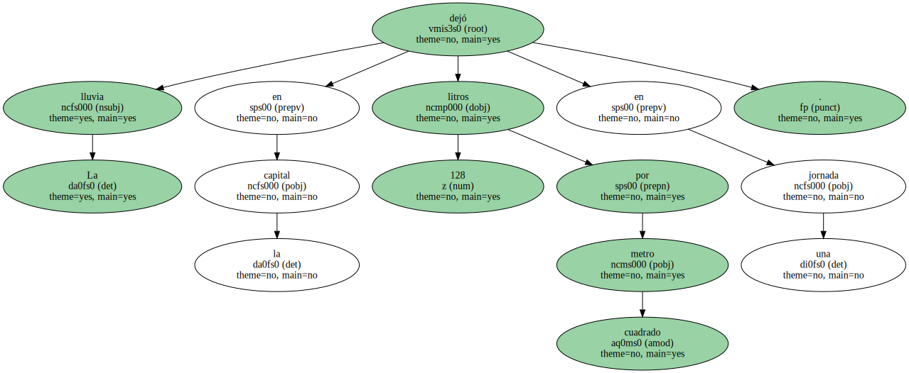El desbordamiento del Júcar obligó a efectuar varios rescates en Albacete.
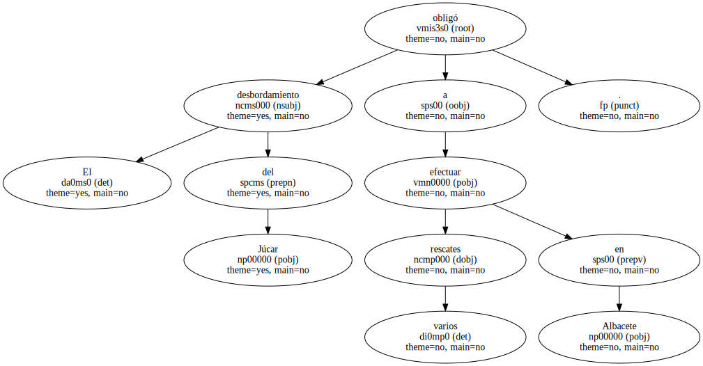Hacía 41 años que no caía tanta agua en Valencia en un solo día.
Los 128 litros que dejó el temporal entre el domingo por la mañana y la madrugada de ayer provocaron numerosos problemas en la ciudad , como inundaciones de túneles , garajes anegados y cortes en el metro.
El concejal del Ciclo Integral del Agua , Ramón Isidro Sanchís , explicó que , entre la medianoche y las siete de la mañana de ayer , las estaciones de bombeo y colectores " evacuaron un total de 8.540.000 metros cúbicos , equivalentes a 4.500 piscinas olímpicas ".
Los servicios de emergencia recibieron 81 llamadas de auxilio y los bomberos se emplearon a fondo en achicar agua y en el rescate de 10 personas que quedaron atrapadas dentro de sus vehículos a causa de la tromba.
UN DERRUMBE.
Las lluvias también superaron los 100 litros en varias localidades cercanas a la capital.
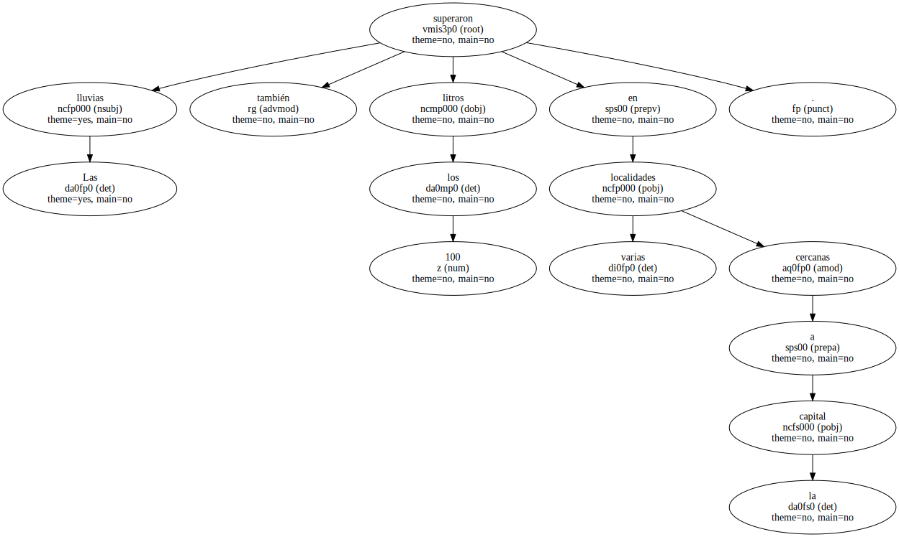En Burjassot , la fuerza del agua provocó el derrumbe de una vivienda baja que , al estar deshabitada , no produjo daños personales.

En Burjassot , la fuerza del agua provocó el derrumbe de una vivienda baja que , al estar deshabitada , no produjo daños personales.
En Burjassot , la fuerza del agua provocó el derrumbe de una vivienda baja que , al estar deshabitada , no produjo daños personales.

En Burjassot , la fuerza del agua provocó el derrumbe de una vivienda baja que , al estar deshabitada , no produjo daños personales.
El barranco de la Saleta de Aldaia se desbordó y dejó inutilizado uno de los túneles de acceso a la población.
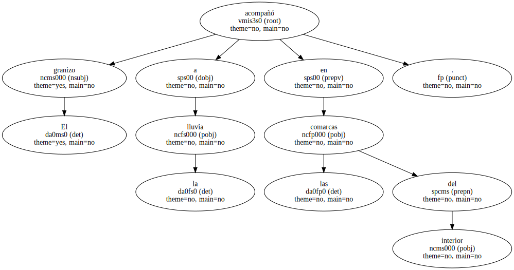La tromba de agua fue la causa del corte de algunas carreteras locales , como la que une Alcàsser y Albal en la comarca de l'Horta Sud y , hacia el interior , la que comunica Olocau y Bétera , que estuvo impracticable hasta el mediodía de ayer.
La tromba de agua fue la causa del corte de algunas carreteras locales , como la que une Alcàsser y Albal en la comarca de l'Horta Sud y , hacia el interior , la que comunica Olocau y Bétera , que estuvo impracticable hasta el mediodía de ayer.
La tromba de agua fue la causa del corte de algunas carreteras locales , como la que une Alcàsser y Albal en la comarca de l'Horta Sud y , hacia el interior , la que comunica Olocau y Bétera , que estuvo impracticable hasta el mediodía de ayer.
La tromba de agua fue la causa del corte de algunas carreteras locales , como la que une Alcàsser y Albal en la comarca de l'Horta Sud y , hacia el interior , la que comunica Olocau y Bétera , que estuvo impracticable hasta el mediodía de ayer.
OTROS EFECTOS.

El granizo acompañó a la lluvia en las comarcas del interior.
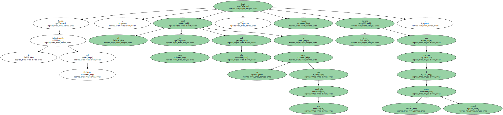La carretera entre La Puebla de San Miguel y Losilla de Aras , en la comarca de Els Serrans , sufrió numerosos desprendimientos y la zona vinícola de Utiel-Requena , padeció los efectos de la piedra.
No obstante , las asociaciones de agricultores coincidieron en que las lluvias serán , en general , beneficiosas para el campo , así como para las reservas de riego de los pantanos , Según confirmó la Confederación Hidrográfica del Júcar.
También la provincia de Albacete resultó afectada por el temporal.
El río Júcar se desbordó a su paso por La Recueja , donde quedaron anegadas huertas y viviendas de las riberas.
La Guardia Civil rescató a algunos vecinos de sus casas.
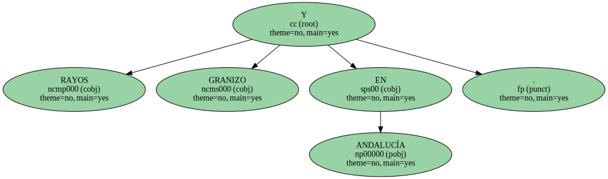Según la Subdelegación del Gobierno , el nivel de agua del río a su paso por este municipio llegó a crecer tres metros por encima de su cauce natural.
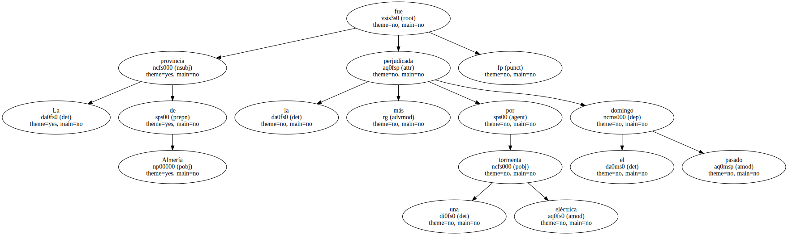PLAYAS DESIERTAS.
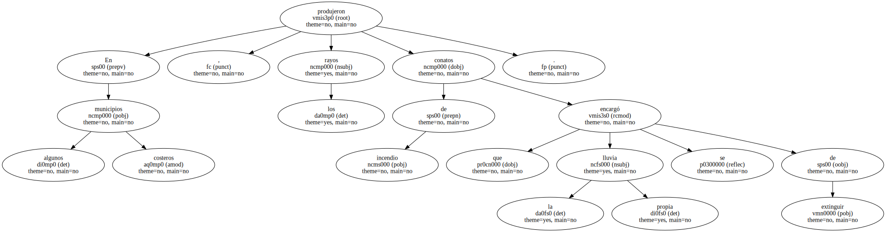El principal afectado por las fuertes precipitaciones ha sido el sector turístico.
Las lluvias de hasta 60 litros caídas en Alicante dejaron desiertas las playas , desde Sant Joan hasta Benidorm.
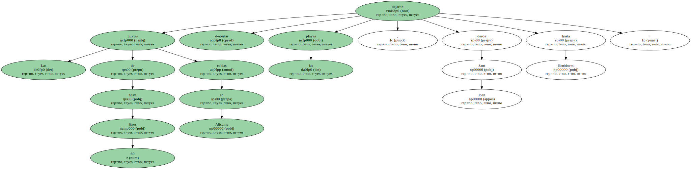A mediodía de ayer , el Centro de Coordinación de Emergencias retiró la alerta por lluvia.
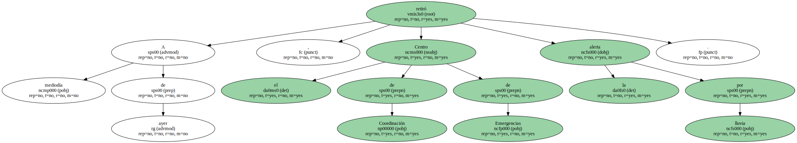RAYOS Y GRANIZO EN ANDALUCÍA.
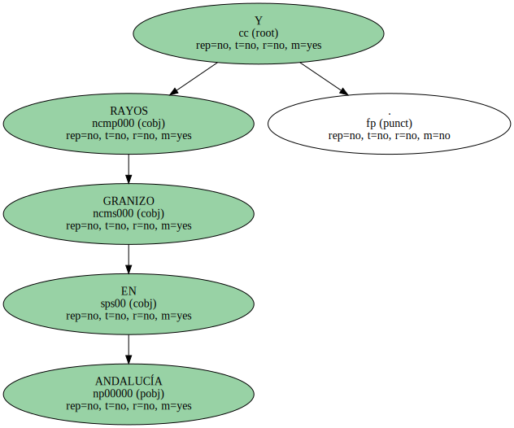La provincia de Almería fue la más perjudicada por una tormenta eléctrica el pasado domingo.
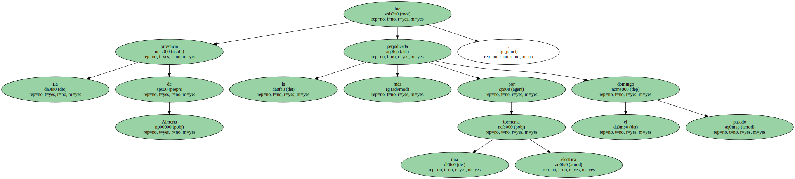En algunos municipios costeros , los rayos produjeron conatos de incendio que la propia lluvia se encargó de extinguir.
En Granada hubo desprendimientos de piedras y barro en la autopista A-92 y dos carreteras locales tuvieron que ser cortadas.
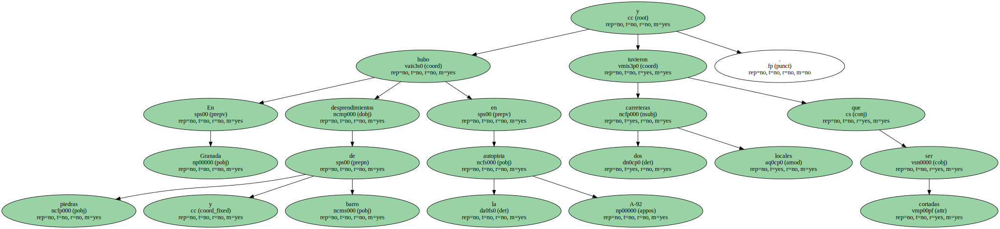